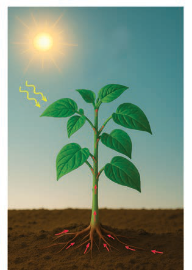

- 2.Sow one or two seeds in the soil and water the soil.
- 3.Place the container containing sowed seeds in a spot with sunlight.
- 4.Water it daily.
- 5.Observe and record changes daily.Use the following table to track your plants’ growth.
| Day | Changes that occur |
|---|---|
| 1-5 | |
| 6-10 | |
| 11-15 | |
| 16-20 | |
| 21+ |
Results:Write down the observations from your experiment.
Conclusion:Summarise what you have learnt from the experiment.
Essential requirements for plant growth
Plants grow well when they get their essential requirements.Figure 2, shows some of the essential requirements for plant growth.
Figure 2: Essential requirements for plant growthA labelled plant diagram showing sunlight and temperature above the plant, air containing carbon dioxide and oxygen near the leaves, and water and nutrients entering through the roots.

Sun(Light and temperature)
Air(Carbon dioxide and oxygen)
Water and nutrients